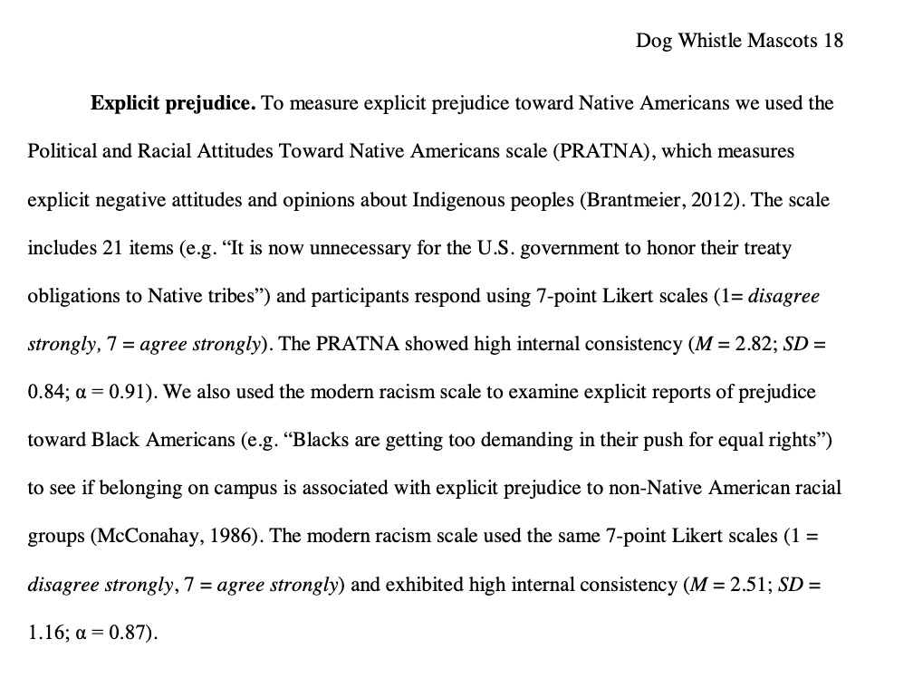
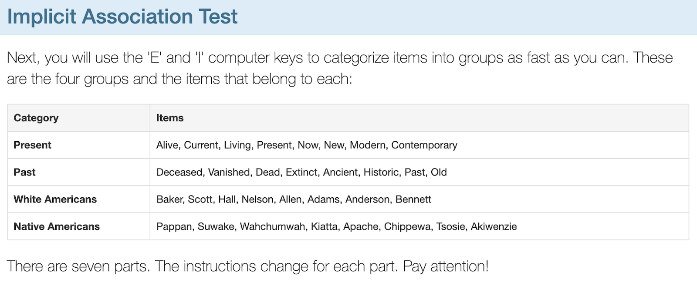

Lab6
The Mascot Dataset.
Hi class! Had hoped to guide y’all through this in lecture, but am sick and so I will not be doing this. But hoping your GSI can lead y’all, and we can use Discord to discuss any issues / other questions.
Please read below; a little more set-up than normal for our Lab Assignment. When submitting the assignmen, please only include answers to the Lab Question - cut out all the other content.
Description of Research Question (and Problem)
Research Question : “Why do people differ in their beliefs about native american mascots?”
Researcher (& Berkeley alumnus) Michael Kraus : Informed by his experiences as a new faculty member at the University of Illinois at Urbana-Champaign.
DISCUSSION : Do we need this science? What are the arguments you’ve heard for why native american mascots are / are not racist?
Link to Data and Description of Variables
- Link to Mascot Dataset + Full Codebook
- Implicit and Explicit Prejudice in the Mascot Dataset
| Variable | Description |
| attitude | a scale created based on a 13-item survey about attitudes toward native american mascots at UIUC, measured with items such as “I wish the Chief were still the mascot” and “Chief Illiniwek is a racist symbol (negatively-keyed item)”. Higher numbers = more positive rating of the mascot. |
| IATscore | a continuous implicit measure of the person’s unconscious prejudice toward / against Native Americans, measured in terms of how fast people are to associate Native American (vs. White) names with Past (vs. Present) terms. Higher scores = more Present-White and Past-Native American bias. |
| prejudiceNatAm | a continuous explicit measure of the person’s conscious prejudice against Native Ameicans, measured with items such as, “Native Americans are a vanishing culture and there are few “real” Indians” and “It is now unnecessary for the U.S. government to honor their treaty obligations to Native tribes.” Higher numbers = more prejudice against Native Americans. |
Below are the specific measures that were used.
Note : the IAT is not a perfect measure, and there’s a fair amount of debate about whether it is a reliable and valid measure as claimed (see here and here and here for academic examples of some of this debate). FWIW my hot take is that I believe a) implicit measures are really hard to quantify, b) the underlying mechanism that experiences shape our cognition is real, c) we live in a society that prioritizes white and male voices in various ways (history education; modern media; etc.), d) that A-C together would suggest it is very likely people would hold unconscious biases that reflect those in society, and E) it’s important to identify and name those biases if you want to address them. Happy to chat more; thx for attending my footnote talk. Anyway, here’s a link to learn more or take a test for yourself.
| Measures of Implicit and Explicit Prejudice |
|---|
|  |
|  |
The Lab Questions
Problem 1.
These data measure Midwestern college students’ implicit and explicit prejudiced attitudes toward Native Americans, and their support for a college Native American mascot considered racist by local tribes. The researchers predicted that both implicit prejudice (IV1 = IATscore) and explicit prejudice (IV2 = prejudiceNatAm) would be related to more positive attitudes toward the native american mascot (DV = attitude). Test these researchers theory.
- Load the data, check to make sure the data loaded correctly, and graph each variable that will be used in your models.
- Define a linear model to predict the variable attitudes (DV) from implicit prejudice (IV1 = IATscore). Include a graph of the linear model, and report the slope and R2 value of this model beneath this graph.
- Define a linear model to predict the variable attitudes (DV) from explicit prejudice (IV2 = prejudiceNatAm). Include a graph of the linear model, and report the slope and R2 value of this model beneath this graph.
- Describe what you observe about this relationship. Were the reserachers’ theory supported? Why do you think these patterns exist? Which measure of prejudice (implicit or explicit) was a better predictor of the DV?
Problem 2.
How strong is the relationship between implicit and explicit prejudice? Define a linear model to test this prediction. Then, z-score your DV and IV in the linear model, and report (and interpret) the slope and \(R^2\) value. How did these statistics change (from the non-z-scored model to the z-scored model)? How did they remain the same?
Problem 3 (On Your Own).
Identify another numeric variable from the mascot dataset that you think will predict attitudes toward the mascot. Define the linear model, report the statistics and graph needed to understand the relationship, and explain what you observe about the relationship between the two variables below.